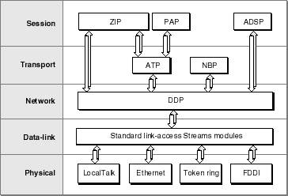

About AppleTalk
Every Mac OS computer includes AppleTalk hardware and software, so if your application needs to communicate with other Mac OS computers, you may want to use an AppleTalk protocol. AppleTalk includes protocols that handle file sharing, LaserWriter and ImageWriter printing, data exchange through data streams or packets, and AppleTalk name lookups across a network.Although AppleTalk includes protocols that provide connection-oriented services, it is considered a connectionless network because all AppleTalk data is ultimately delivered by the Datagram Delivery Protocol (DDP), which implements connectionless packet delivery. Connection-oriented AppleTalk protocols that establish sessions and provide reliable delivery of data, such as the AppleTalk Data Stream Protocol (ADSP), are built on top of the connectionless packet services that DDP provides. In the AppleTalk protocol stack, each protocol in a specific layer provides a set of functions and services to one or more protocols in a higher-level layer.
The AppleTalk architecture is closely aligned with the industry-standard Open Systems Interconnection (OSI) networking model. Figure 12-1 shows the AppleTalk protocols supported by Open Transport and shows how they relate to one another in the layers defined by the OSI model.
Figure 12-1 AppleTalk protocol stack and the OSI model

Here are some points worth noting about how AppleTalk under Open Transport maps to the OSI model:
- At the session layer, the AppleTalk Data Stream Protocol (ADSP) provides its own stream-based transport layer services that allow for full-duplex dialogs, while the Printer Access Protocol (PAP) uses the transaction-based services of the AppleTalk Transaction Protocol (ATP) to transport workstation commands to servers. The Zone Information Protocol (ZIP) is also at the session layer; a subset of its functions are available through AppleTalk service providers.
- At the transport layer, there are the AppleTalk Transaction Protocol (ATP) and Name-Binding Protocol (NBP), but NBP is accessible only through mapper providers. In addition to these two protocols, ADSP includes functions that span both the session and the transport layers.
- At the network layer, the Datagram Delivery Protocol (DDP) is AppleTalk's network delivery protocol.
- At the data-link layer, various link-access protocols support the underlying networking hardware. Open Transport provides standard Streams modules for the LocalTalk, Ethernet, token ring, and FDDI drivers.
AppleTalk Networks and Addresses
Applications can use AppleTalk protocols across a single AppleTalk network or an AppleTalk internet, which is a number of interconnected AppleTalk networks. An AppleTalk internet can include a mix of LocalTalk, TokenTalk, EtherTalk, and FDDITalk networks, or it can consist of multiple networks of a single type, such as several LocalTalk networks. An AppleTalk internet can include both nonextended and extended networks.An AppleTalk nonextended network is one in which
LocalTalk is an example of a nonextended network. Each node on a nonextended network, such as LocalTalk, has a unique 8-bit node ID. Since there are 256 possible combinations of 8 bits, and three IDs are not available (ID 255 is reserved for broadcast messages and ID 0 and 254 are not allowed), a nonextended network can support up to 253 active nodes at a time.
- the network has one network number assigned to it
- the network supports only one zone
- all nodes on the network share the same network number and zone name
- each node on the network has a unique node ID
An AppleTalk extended network is one in which
Table 12-1 summarizes the identifiers that you use for AppleTalk addressing.
- the network has a range of network numbers assigned to it
- the network supports multiple zones
- each node on the network has a unique network number node ID combination to identify it
Table 12-1 AppleTalk addressing identifiers
Each network is assigned a network number so that an AppleTalk router can determine the packet's destination network number and forward the packet through an internet from one router to another until the packet arrives at its correct destination network. An extended network uses a range of network numbers. Nodes on an extended network can have different zone names and different network numbers within the network number range.
A node is the data-link addressable entity on an AppleTalk network; all physical devices on an AppleTalk network are nodes. When a node first connects to an AppleTalk network or is rebooted, AppleTalk dynamically assigns it a unique 8-bit node ID. For a node on an extended network, AppleTalk also assigns it a 16-bit network number within the range of numbers assigned to the extended network that the device is connected to. Once a packet arrives at its destination network, the packet is delivered to its destination node within that network, based on the node ID.
Because AppleTalk assigns node IDs dynamically whenever a node joins the network or is rebooted, a node's address on an AppleTalk network can change from time to time, although a computer attempts to reuse the node ID it last used. the NBP provides a mapping of logical names (like those in the Chooser) to physical addresses in such a way that if the node ID changes, you can still find the remote service. This mapping is discussed further in "About AppleTalk Addressing" and "About AppleTalk Service Providers" in this book.
- Note
- Open Transport allows system administrators to assign static node IDs.
A zone is a logical grouping of nodes within an AppleTalk internet. The use of zones allows a network administrator to set up departmental or other logical sets of nodes in an internet. A single extended network can contain nodes belonging to multiple zones; an individual node on an extended network can belong to only one zone. Each zone is identified by a unique zone name.
A socket is an addressable data-link entity on a network. Endpoints exchange data with each other across an internet through sockets. Because each endpoint has its own socket address, a node can have multiple concurrent open connections, for example, one to a file server and one to a printer. A node can have several sockets open at the same time, so each endpoint on an AppleTalk network is associated with a unique 8-bit socket number.
AppleTalk sockets are divided into two groups: statically assigned sockets and dynamically assigned sockets. Statically assigned sockets are those sockets that are permanently reserved for a designated protocol or process. For example, socket 4 is always reserved as the echo socket, used for echoing packets across a network. Dynamically assigned sockets are those sockets arbitrarily assigned by DDP if you do not specify a socket number when binding an endpoint; DDP returns the socket number to you in the endpoint's address when the binding has completed. In certain situations, you can bind multiple endpoints to a single socket.
Multinodes
AppleTalk's multinode architecture allows an application to acquire virtual node IDs, called multinode IDs. These multinode IDs allow the computer running your application to appear as multiple nodes on the network even though it is only one physical entity. Each acquired multinode is in addition to the standard node ID already assigned to the computer when it joined the network as a node. The prime example of a multinode application is Apple Remote Access Server (ARA), which uses multinodes to make the connected remote client appear on the local network.You can use a multinode to receive broadcast packets and any AppleTalk packets addressed to it through its multinode ID. You must then process the packets in a custom manner. A multinode ID is not connected to the AppleTalk protocol stack above the network (DDP) layer, which means that an application that uses a multinode cannot expect to be supported by the services of higher-level protocols such as NBP, ATP, and ADSP, but instead must implement its own higher-level protocols if it expects packets for such protocols.
Handling Miscellaneous Events
In classic AppleTalk, you could use the AppleTalk Transition Queue (ATQ) to inform your application of miscellaneous events that occurred unexpectedly within AppleTalk. In Open Transport AppleTalk, this facility has been modified to allow your endpoint to receive only a few predefined events. An example of such an event is an AppleTalk router coming online or a zone name changing. When one of these events occurs, Open Transport sends a message to the notifier functions of all endpoints that have registered for reception of miscellaneous events. (Any applications that rely on the AppleTalk Transition Queue must use AppleTalk backward compatibility to handle them as described in Inside Macintosh: Networking.)In Open Transport AppleTalk, there are five miscellaneous events that you can receive on your AppleTalk endpoint, which does not need to be bound. They are as follows:
To receive these events, your application must use the
OTIoctlfunction with a provider reference value, the constantkOTGetMiscellaneousEventsas its command, and the value of 1 as its data. For more information on theOTIoctlfunction, refer to "OTIoctl" in this book.Configuring AppleTalk Protocol Providers
When you want to use a particular AppleTalk protocol, you open an endpoint configured for that protocol. To do this, you use specific constants as part of a configuration string that you pass to the Open Transport function for opening endpoints. This string specifies to Open Transport how to create the correct endpoint for you. For more information on the functions that you use to open endpoints, mappers, and AppleTalk service providers, refer to the chapters in this book on the specific type of provider; for more information about configuring providers, see "Configuring and Opening a Provider" in this book.Table 12-2 lists the constants you use to configure the AppleTalk providers. You can use either the constant or the literal string when creating configurations.
Table 12-2 Protocol identifiers for use in configuring AppleTalk providers
There is one exception to the typical method of configuring providers. AppleTalk service providers do not have a string equivalent value. You configure an AppleTalk service provider with the constant
kDefaultAppleTalkServicesPath, which has a value of((OTConfiguration*)-3). The code for creating an AppleTalk service provider is as follows:OTOpenEndpoint(kDefaultAppleTalkServicesPath, 0, &err)If you want to set an option as part of the configuration string, you need to know which protocols use which options and how to translate the option's constant name, given in the header files, into a string that the configuration functions can parse. For the AppleTalk options, Table 12-3 provides the constant name, the value used in the configuration string, and the protocols that use that option.Table 12-3 AppleTalk options in the configuration string
To configure a provider with an option string, you put the string and its assigned value in parentheses after the protocol that uses it, as in the following lines of code:
OTOpenEndpoint(OTCreateConfiguration ("adsp,ddp(Checksum=1),ltlkB"), 0, NULL, &err) OTOpenEndpoint(OTCreateConfiguration (kADSPName"(EnableEOM=1)"), 0, NULL, &err);
Subtopics
- AppleTalk Networks and Addresses
- Multinodes
- Handling Miscellaneous Events
- Configuring AppleTalk Protocol Providers